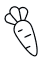
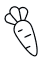
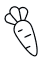

Как поменять свои пищевые привычки?
29.05.2020

29.05.2020
Привычка — это неосознанное, то, что мы делаем на автомате.
Например, это такие обыденные вещи, как чистка зубов утром или пристегнуться, садясь в автомобиль.
Большинству из этих привычек мы не отдаем отчета. Именно этот бессознательный фактор и является той сложностью, которая не позволяет вам легко и просто изменить эту самую привычку в итоге.
В такой момент ваш мозг не думает, а стоит ли ему это делать. Он просто берет и делает. Пищевые привычки действуют так же.
Их нужно перевести на автомат. И если вы считаете, что для этого нужна невероятная сила воли или сверхстрогий самоконтроль, то вовсе нет. У меня для вас есть несколько простых постепенных шагов, которые помогут вам сделать ваши пищевые привычки осознанными и подконтрольными.
Первое, с чего стоит начать — это прекратите покупать вредные продукты. Запомните: то, чего нет, того и не съешь. В свою очередь, ставим на стол на самое видное место тарелочку с ломтиками моркови, сухофруктами и орешками.
Второе — это создаем себе препятствия на пути к вредностям — ходите домой другой дорогой, проходите мимо отдела сладостей или офисной кухни, если ощущаете манящий запах выпечки — просто понюхайте запястье, на которое утром нанесли духи.
Третье и очень важное правило — полезные продукты в вашей квартире и на работе должны стать доступнее и заметнее. Например, яблоко или морковь вместо печенья и конфет на столе, сделайте заготовку из нарезанных листьев салатов в холодильнике, заранее очистите овощей и нарежьте ломтиками.

Четвертое — используйте посуду для еды меньшего размера. Да-да, придется отказаться от любимых блюдец на пол-стола, но оно того стоит. Также не берите добавки. Ведь многие исследования доказывают, что мы делаем выводы о своем насыщении, основываясь не на своих чувствах сытости, а видя, что тарелка уже пуста.
Пятое — всегда начинайте еду с овощей.
Очень рекомендую менять привычки не только с себя, а сразу с семьей. Поддержка близких очень важна будет для вас.
И, конечно же, для смены пищевых привычек очень рекомендуем попробовать рационы здорового питания GastroChef.